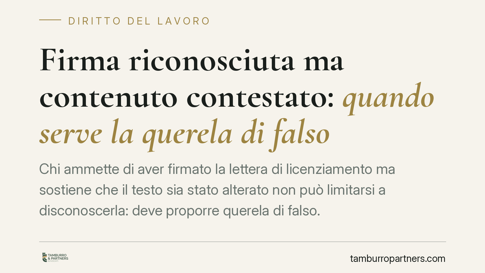

Firma riconosciuta ma contenuto contestato: quando serve la querela di falso
Chi ammette di aver firmato la lettera di licenziamento ma sostiene che il testo sia stato alterato non può limitarsi a disconoscerla: deve proporre querela di falso. Lo ha ribadito la Cassazione con l'ordinanza n. 17089/2026, tracciando una linea netta tra firma apocrifa e contenuto contestato. La distinzione pesa sull'onere probatorio e sulla stessa sopravvivenza dell'impugnazione.

Il caso
Un lavoratore impugna il licenziamento sostenendo che la lettera a sua firma contenesse, al momento della sottoscrizione, un testo diverso da quello poi prodotto in giudizio. Non nega di aver firmato: contesta ciò che risulta scritto sopra la firma.
Il Tribunale di Salerno e poi la Corte d'appello respingono la tesi. La Corte di Cassazione, con l'ordinanza n. 17089/2026, conferma l'orientamento: in questa situazione non basta il disconoscimento, serve la querela di falso.
Inquadramento normativo
Il codice di procedura civile distingue due strumenti diversi per contestare una scrittura privata.
Il disconoscimento (artt. 214 e 215 c.p.c.) serve quando si nega che la firma o la scrittura provengano dalla propria mano: è il caso della firma apocrifa, cioè falsa o imitata. Chi disconosce apre la strada alla verificazione, procedimento con cui la controparte deve provare l'autenticità del documento.
La querela di falso (artt. 221 ss. c.p.c.) opera invece su un piano diverso. Si utilizza quando non si nega la paternità della firma, ma si afferma che il documento è stato materialmente alterato: ad esempio che il testo è stato aggiunto, modificato o sostituito dopo la sottoscrizione. È uno strumento più gravoso, che richiede l'indicazione specifica degli elementi e delle prove della falsità e che può condurre a un distinto giudizio.
La differenza non è formale. Chi riconosce la firma, infatti, riconosce implicitamente la provenienza dell'intero documento secondo la regola dell'art. 2702 c.c., per cui la scrittura privata fa piena prova fino a querela di falso. Da qui la conclusione della Corte: se la firma è autentica, l'unico modo per demolire il contenuto è la querela.
Implicazioni pratiche
Per il lavoratore che intenda contestare una lettera di licenziamento la scelta dello strumento è decisiva e spesso irreversibile.
Se si sceglie la via sbagliata, si rischia di vedere respinta la contestazione per ragioni procedurali, senza che il giudice entri nel merito dell'alterazione lamentata. Il documento resta pienamente valido e con esso il licenziamento.
Il punto critico è la coerenza tra ciò che si afferma e lo strumento che si attiva. Ammettere la firma e poi limitarsi al disconoscimento è una contraddizione che la giurisprudenza non salva.
Per il datore di lavoro, la pronuncia rafforza la solidità probatoria della lettera sottoscritta: una volta accertata la firma, il contenuto gode di una presunzione forte, superabile solo con l'onere aggravato della querela.
Resta inteso che l'alterazione del documento, se dimostrata, integra anche un profilo di rilievo penale, su cui la querela di falso può innestarsi.
Cosa fare in concreto
- Qualifica subito la contestazione. Prima di impugnare, stabilisci se neghi la firma (disconoscimento) o se ammetti la firma ma contesti il testo (querela di falso). Da questa distinzione dipende tutto.
- Raccogli gli elementi dell'alterazione. Se intendi proporre querela, documenta in modo specifico cosa è stato modificato: versioni precedenti del testo, comunicazioni precedenti, testimoni della sottoscrizione.
- Valuta i tempi di impugnazione. La contestazione va coordinata con i termini di decadenza per impugnare il licenziamento, che restano stringenti e autonomi rispetto al profilo del falso.
- Non improvvisare la scelta processuale. Una querela di falso mal costruita o uno strumento sbagliato possono compromettere definitivamente la difesa nel merito.
- Conserva ogni documento originale. Copie e scansioni riducono le possibilità di accertamento tecnico sull'eventuale alterazione materiale.
In sintesi
L'ordinanza n. 17089/2026 consolida un principio pratico semplice: chi riconosce la propria firma non può cavarsela con il disconoscimento. Se il problema è il contenuto, la strada è la querela di falso, con i suoi oneri più severi. Consigliamo di affrontare la scelta dello strumento prima di avviare qualunque impugnazione, perché un errore in questa fase difficilmente è recuperabile.
---
*Contributo informativo a cura di Tamburro & Partners - Avv. Giuseppe Tamburro. Non costituisce parere legale.*
Ogni storia di lavoro ha i suoi tempi.
Se gestisci HR e vuoi un confronto su contenzioso, ispezioni o licenziamenti, scrivi allo studio. Ti rispondiamo entro un giorno lavorativo.